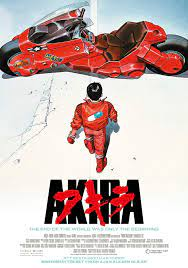

Sinopse
Uma enorme explosão fez com que Tóquio fosse destruída em 1988. Em seu
lugar foi construída Neo Tóquio, que, em 2019, sofre com atentados
terroristas por toda a cidade. Os amigos Kaneda e Tetsuo integram uma
gangue de motoqueiros. Eles disputam rachas violentos com uma gangue
rival, os Palhaços, até que um dia Tetsuo encontra Takashi, uma
estranha criança com poderes que fugiu do hospital onde era mantido
como cobaia.

Personagem principal
Akira é uma criança órfã recrutada pelo governo para seu projeto
secreto de parapsicologia e recebeu o número 28. O projeto forçou
Akira a desenvolver poderosas habilidades psíquicas. Durante esse
tempo, ele conheceu e fez amizade com outras crianças envolvidas no
projeto, notadamente Kiyoko , Masaru e Takashi (mais tarde conhecidos
coletivamente como Espers ).
Crítica
Akira é uma obra que utiliza da fúria adolescente para dialogar sobre
a revolução tecnológica, a adulteração de poder e a hierarquia
quebrada, manuseando uma visão fantasiosa surreal, com um belíssimo
cenário cyberpunk, que, assim como tudo no filme, é mais uma
simbologia para seu discurso social, criando um legado sensacional de
conquista técnica, com uma animação que ainda se sustém contra a
tecnologia posterior, uma narrativa recheada de temas ocultos, que
desafiam o espectador, tão na contramão da exposição de animes, e até
mesmo criou seu próprio cult following em torno da fenomenal
complexidade sci-fi. Já vi muitas interpretações do final, mas vejo o
desfecho dentro dessa vertente otimista do diretor, em uma forma de
renascimento dos personagens principais e do próprio universo como um
todo. Uma obra que merece uma revisitação anual